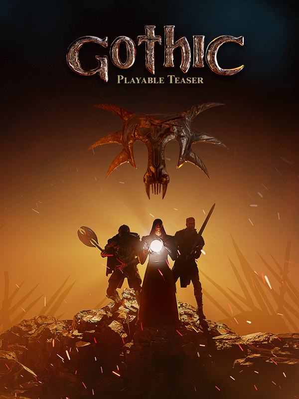

Gothic Playable Teaser
Gothic Playable Teaser
Details
|  | |
| Playtime | Not Played |
| Last Activity | Never |
| Added | 02/12/2022 9:35:48 |
| Modified | 18/05/2025 0:35:34 |
| Completion Status | Not Played |
| Library | Steam |
| Source | Steam |
| Platform | PC (Windows) |
| Release Date | 13/12/2019 |
| Community Score | 50 |
| Critic Score | |
| User Score | |
| Genre | Role-playing (RPG) |
| Developer | Alkimia Interactive THQ Nordic |
| Publisher | THQ Nordic |
| Feature | Single Player |
| Links | Official Website Discord Wikia Steam |
| Tag | Action Action RPG Atmospheric Dark Fantasy Exploration Fantasy Gore Gothic Medieval Open World RPG Singleplayer Third Person |
Description
This is not a full game. Its a playable teaser version to a potential approach for a new Gothic game. Nothing is set in stone.
So your feedback is essential to turn Gothic into a modern game. Therefore, and to reward your loyalty, Gothic - Playable Teaser is totally free for all fans who already have any of the titles in the Gothic saga or developed by Piranha Bytes!

The Kingdom of Myrtana has been invaded by an implacable horde of orcs.
King Rhobar II, in need of a large quantity of magical ore in order to forge powerful weapons, operates the Khorinis mines with all available prisoners.To prevent them from escaping, the monarch asks his best magicians to create a magical barrier. But something goes wrong. The magic gets out of control and a mutiny turns the mines into a wild territory now controlled by the most violent prisoners.
The King is forced to negotiate with the new owners, while the tension between the different factions of the mines increases. What no one expects is that the arrival of an unknown prisoner will change absolutely everything.

Features:
- Return to The Colony, a reimagination of the popular and revolutionary game Gothic from 2001. Rediscover the world of the mining colony, its secrets and challenges in this playable version of 2 hours.
- Play as the Nameless Hero – Manage the fate of a lifetime convicted prisoner who must survive in a world of wild animals, creatures and convicts of dangerous reputation.
- Experience a 2 hour long introduction to The Colony – A mysterious red scroll and a set of strange characters will immerse you in a complex story of loyalties and betrayals.
- Fight humans and others creatures like Scavengers and Wolfs – Learn the combat arts through a tactical and demanding combat system
- Discover the possibilities of crafting – Experiment with ingredients and recipes to discover powerful soothing and healing foods